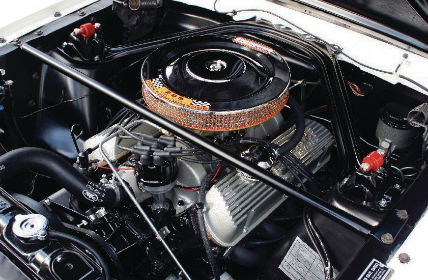
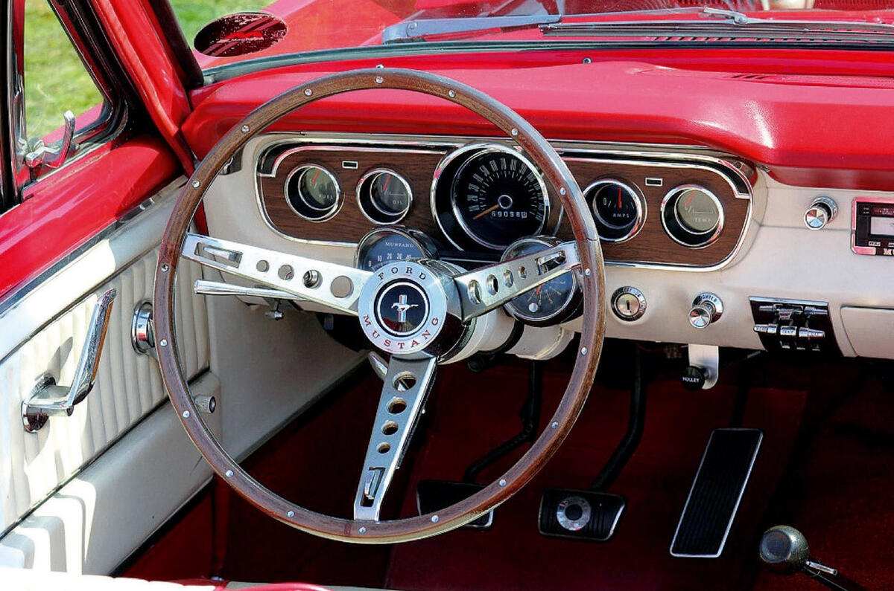

A Ford Mustang 1964. április 17-én debütált a New York-i világkiállításon, és azonnal vihart kavart. Eredetileg "1964 és fél" modellként emlegették, mivel a szabványos modellévtől eltérően félidőben mutatták be. Ez a "pony car" kategória megteremtője volt, egy olyan sportos, mégis megfizethető jármű, amely azonnal elnyerte a fiatalok és a családok szívét egyaránt.
Lee Iacocca, a Ford akkori alelnöke és a Mustang "atyja", egy olyan autót képzelt el, ami ötvözi a sportosságot a praktikummal, mindezt vonzó áron. Az eredmény egy olyan ikon lett, amely az amerikai autógyártás szimbólumává vált, és hatalmas befolyással volt a popkultúrára.
Design és Műszaki Jellemzők
A Mustang jellegzetes hosszú orra és rövid fara, valamint a háromágú hátsó lámpák azonnal felismerhetővé tették. A kezdeti modellekhez számos motorválaszték állt rendelkezésre, a gazdaságos hathengeres motoroktól egészen az erőteljes V8-as egységekig, mint például a népszerű 289 köbhüvelykes (4,7 literes) Windsor motor.
A Ford Mustang 289 köbhüvelykes V8-as motorja
Az autó beltere is a személyre szabhatóságra épült, számos extrával, mint például a középkonzol, a rádió vagy a légkondicionáló. A Mustang azonnal elnyerte a vásárlók kegyeit, és a gyártás első évében több mint 400 000 darabot adtak el, ami hatalmas sikernek számított.
Örökség és Popkultúra
A Ford Mustang nem csak egy autó, hanem egy kulturális jelenség is. Számtalan filmben, televíziós műsorban és zeneszámban szerepelt, ezzel beírva magát a történelembe. Gondoljunk csak a „Bullitt” című filmre Steve McQueen-nel, ahol a Mustang legendás autós üldözésben vett részt. Ez a film is hozzájárult az autó kultuszához.
A Mustang egyszerű, mégis stílusos belső tere
Ma is rendkívül népszerűek a Mustang oldtimer modelljei a gyűjtők és az autórajongók körében. Egy 1964.5-ös Mustang birtoklása nem csupán egy régi autó tulajdonlását jelenti, hanem egy darabka amerikai történelmet és egy időtlen stílus megtestesítőjét.
Ha te is rajongsz az oldtimer autókért, oszd meg velünk a kedvenc Mustang történetedet kommentben!
Alapvető adatok
| Jellemző | Adat |
|---|---|
| Gyártási évek | 1964. április – 1965. augusztus (az 1964.5 modell) |
| Gyártó | Ford Motor Company |
| Kategória | Pony car |
| Motor (alap) | 2.8 L (170 cu in) Thriftpower I6 |
| Motor (opcionális) | 4.7 L (289 cu in) Windsor V8 (több változatban) |
| Teljesítmény (alap) | ~101 LE (75 kW) (170 cu in I6) |
| Teljesítmény (V8) | ~210–271 LE (157–202 kW) (289 cu in V8) |
| Végsebesség (V8) | ~180-200 km/h (112-124 mph) (változattól függően) |
| Karosszéria változatok | Kupé, Kabrió, Fastback |
| Hosszúság | ~4613 mm (181.6 in) |
| Szélesség | ~1732 mm (68.2 in) |
| Magasság | ~1295 mm (51.0 in) |
| Súly | ~1100-1300 kg (2400-2900 lbs) (motor és felszereltség függő) |
| Jellegzetességek | Hosszú orr, rövid far, trapéz alakú hűtőmaszk, háromágú hátsó lámpák |